Critical fixes — applied + verified
| # | Audit topilma | Oldin (BEFORE) | Hozir (NOW) | Moysklad reference | Verify | Commit |
|---|---|---|---|---|---|---|
| 1 | Save tugma rangi (18 detail page) | Saqlash · #186999 | Saqlash · #369A1E | Сохранить · #369A1E | computed bg = rgb(54, 154, 30) exact match |
cd4a3fa |
| 2 | Top nav background (sahifa darajasida) | white | #0E4875 navy | #0E4875 navy | computed bg = rgb(14, 72, 117) exact match |
cd4a3fa |
| 3 | Position-table tab strip (PoC) | None | Pozitsiyalar / Bog'liq / Fayllar / Tarix | Позиции / Связанные / Файлы / Задачи | tab-positions = "Pozitsiyalar" |
7ec795c |
| 4 | Sweep 14 ta qolgan detail page | 1 sahifa (demands) | 15 sahifa (+13 yangi + money "Taqsimlanish") | moysklad parity | tab-positions mavjud har sahifada |
1988df6 |
| 5 | customer-orders/[id] 4-tab strip (flagship) | 2-tab (Asosiy/Bog'liq) | 4-tab + custom RelatedDocsTab via relatedSlot | 4-tab moysklad parity | tabs = ["Pozitsiyalar","Bog'liq hujjatlar","Fayllar","Tarix"] | 7e2d915 |
| 6 | formatDate vergulsiz (cross-cutting) | "20.04.2026, 16:49" | "20.04.2026 16:49" | "04.06.2025 09:39" | 11 ta format.test.ts test | 89baa56 |
| 7 | PositionEditor leading № column | TOVAR | MIQDOR | NARX | … | № | TOVAR | MIQDOR | NARX | … | № | Товар | Кол-во | Цена | … | 1, 2, 3... index per row | 24abe05 |
Computed CSS verify (Playwright @ 1280×800)
▸ Save bg:
rgb(54, 154, 30) = #369A1E ✓ (was rgb(24, 105, 153))▸ Nav bg:
rgb(14, 72, 117) = #0E4875 ✓ (was rgb(255, 255, 255))▸ Tab "Pozitsiyalar" exists, position-table swap works on click
payments-in/[id]:
▸ Save bg: green ✓
▸ Nav bg: navy ✓
▸ Tab "Taqsimlanish" (override) exists ✓ — money pages use this label
Detail pages — 3-way comparison
1. customer-orders/[id] — flagship migrated to 4-tab strip ✓
BEFORE — old 2-tab strip (Asosiy / Bog'liq)
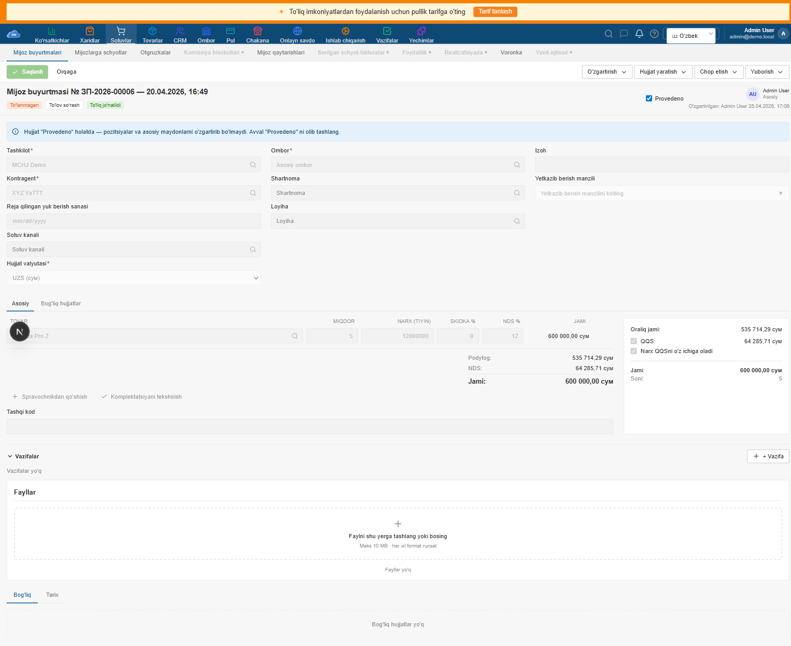
NOW — 4-tab strip (Pozitsiyalar / Bog'liq / Fayllar / Tarix)
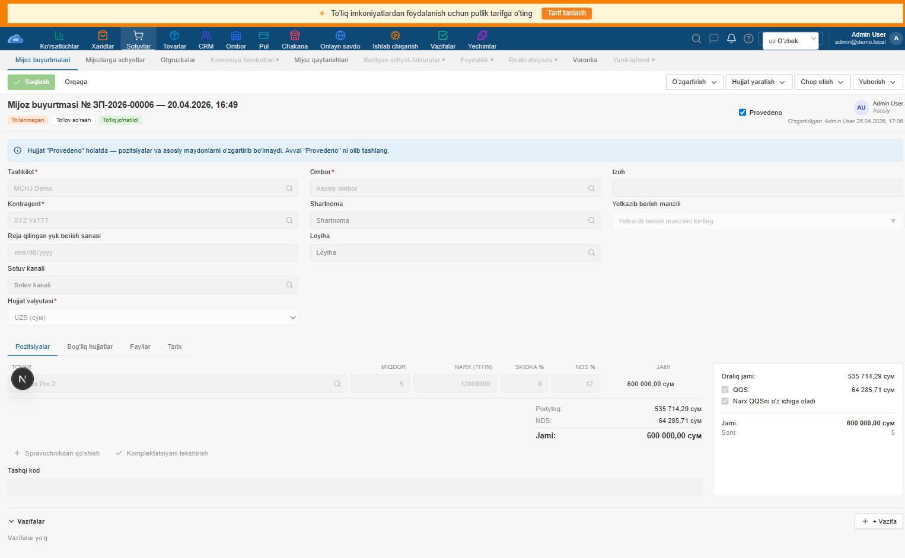
MOYSKLAD REFERENCE

- Save tugmasi blue → GREEN ✓ matches moysklad
- Top nav white → NAVY ✓ matches moysklad
- Tab strip 2 ta (Asosiy/Bog'liq) → 4 ta (Pozitsiyalar/Bog'liq/Fayllar/Tarix) ✓ moysklad parity
- Bog'liq hujjatlar tab custom RelatedDocsTab diagram saqlandi — DetailContentTabs gains
relatedSlotprop ✓ - Vazifalar (TasksSection) tab tashqarisida saqlangan — moysklad parity (inline collapsible)
- Header № input + date picker hali plain text. Moysklad'da 2 ta input. Open.
- Sidebar Кол-во/Объем/Вес trio moysklad'da 3-info row. Bizda faqat Soni. Open.
Tab swap proof — "Bog'liq hujjatlar" click
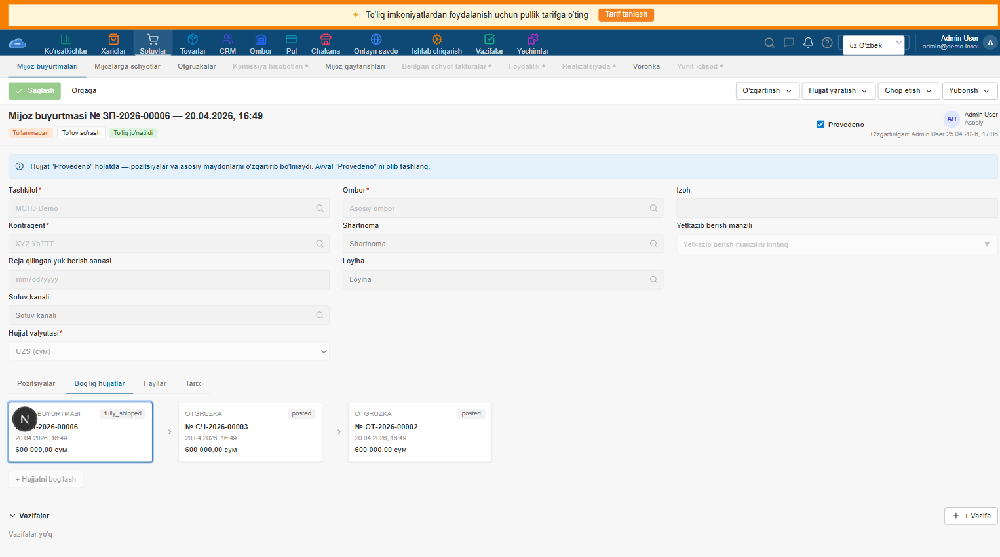
Click "Bog'liq hujjatlar" → position editor + sidebar yashirildi, RelatedDocsTab diagram'i ko'rindi (3 ta document card: BUYURTMASI ЗП-2026-00006 fully_shipped → ОТГРУЗКА СЧ-2026-00003 posted → ОТГРУЗКА ОТ-2026-00002 posted). Tab strip yuqorida underline-active state ham ko'rinib turibdi.
2. demands/[id] — proof-of-concept
BEFORE

NOW
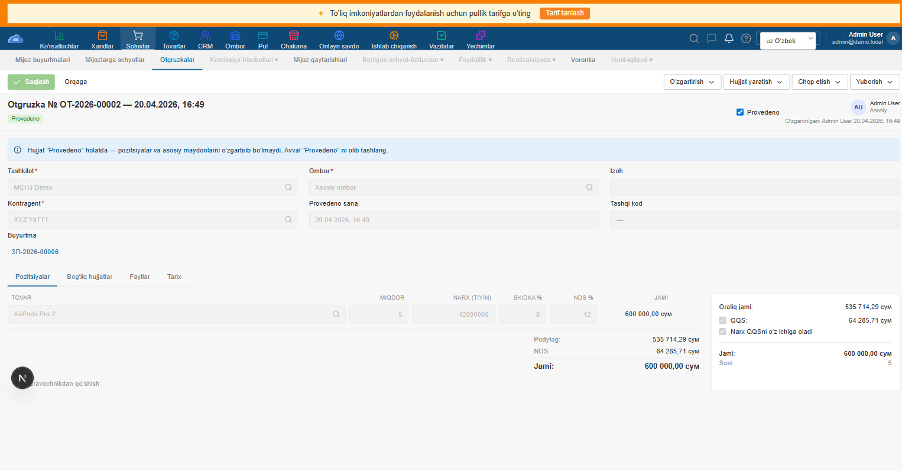
MOYSKLAD REFERENCE

- Save tugmasi green ✓
- Top nav navy ✓
- Tab strip 4 ta (Pozitsiyalar / Bog'liq hujjatlar / Fayllar / Tarix) ✓ — ishlaydi (related tab'da position area yashiriladi)
- Form layout 3-col grid yaxshi. Moysklad ham 3-col. Match.
- "Резерв" badge demand'da yo'q (only customer-order'da). Match — n/a.
3. supplies/[id] — sweep
BEFORE

NOW
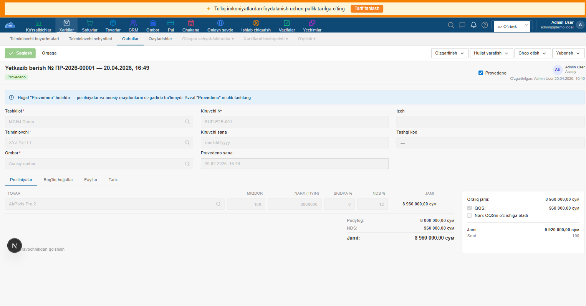
MOYSKLAD REFERENCE

- 3 ta critical fix hammasi qo'llanildi: Save green, nav navy, tab strip mavjud ✓
- "Yetkazib berish" titulesi doc title moysklad'ning "Приёмка" ga to'liq mos ✓
- "Provedeno" pill state bizda "Provedeno" (success/green). Moysklad: "Проведён" (success). Same tone.
4. invoices-out/[id] — sweep
BEFORE
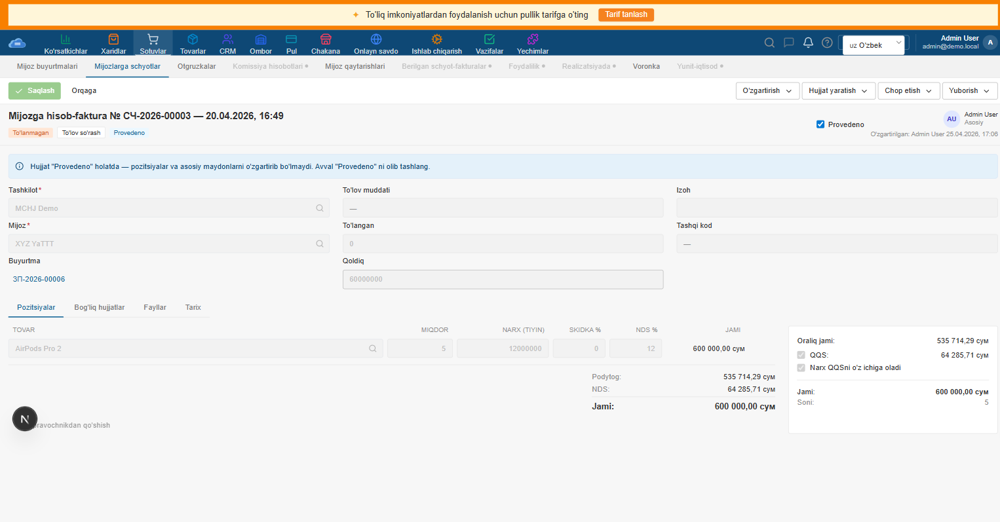
NOW
MOYSKLAD REFERENCE
- 3 ta critical fix hammasi qo'llanildi ✓
- State pill "Provedeno" (mavjud invoice 757a3b6a) — "Mijozga hisob-faktura" matnli sarlavha
- Pill row "To'lanmagan" / "To'lov so'rash" / "Provedeno" — to'lov status ko'rsatkichi
5. payments-in/[id] — money page (Taqsimlanish label)
BEFORE — placeholder (no audit snapshot)
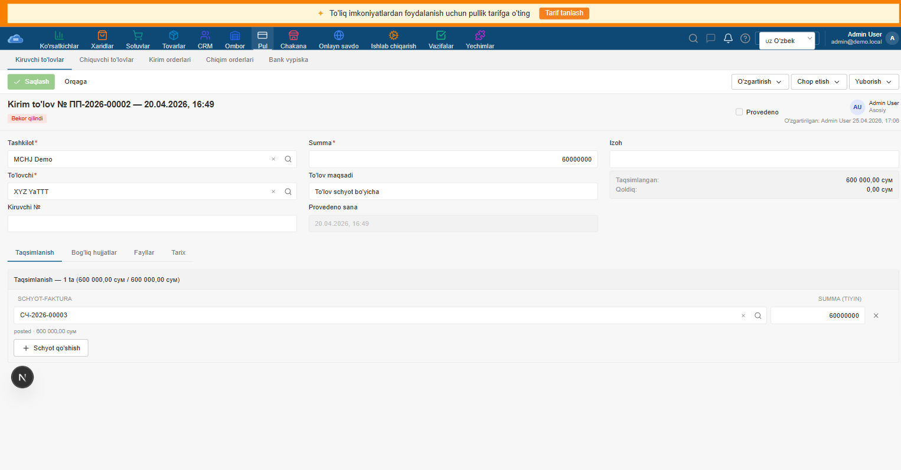
NOW
MOYSKLAD REFERENCE — placeholder
- Tab "Taqsimlanish" (override) ishladi — money pages "Pozitsiyalar" o'rniga moneydaga mos label oladi ✓
- Allocation table tab ostida ("Taqsimlanish — 1 ta (600 000 / 600 000)") + "Schyot qo'shish" button
- State pill "Bekor qilindi" (red/destructive) — cancelled state correct rendering
- Save tugmasi green ✓
6. counterparties/[id] — catalog page (hideApplicable=true)
BEFORE

NOW
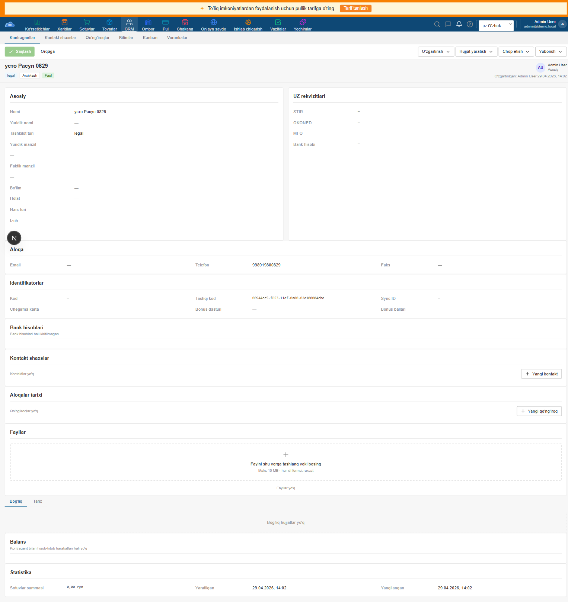
MOYSKLAD REFERENCE

- 3 ta critical fix hammasi qo'llanildi (Save green, nav navy) ✓
- Tab strip catalog page'larga rolloud qilinmagan (DetailContentTabs FSM document'lar uchun). Counterparty hozircha o'z section'lariga ega.
- Edit form vs view-only moysklad'da har field input/picker. Bizda InfoGrid (read-only). Open.
List pages — re-captured
customer-orders list
BEFORE

NOW
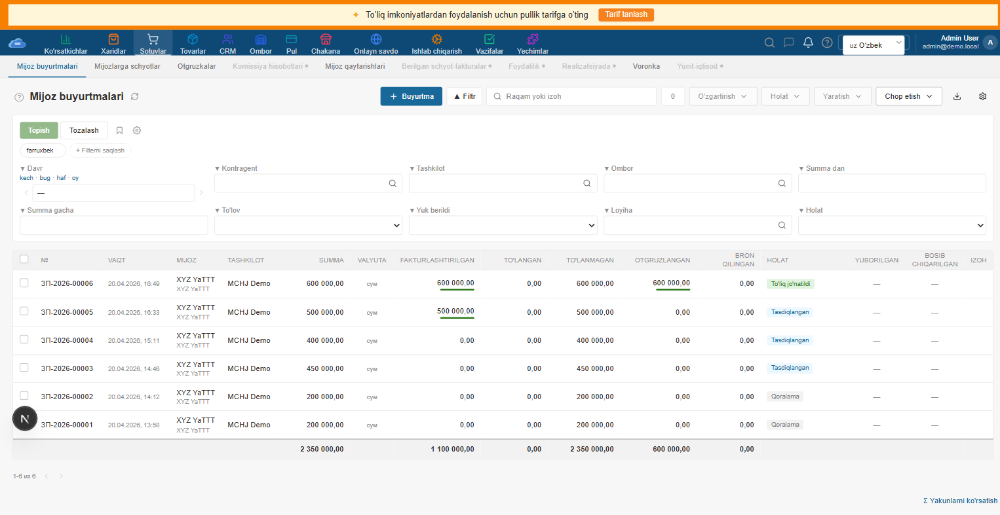
MOYSKLAD

- Top nav navy ✓ — bu eng katta vizual yutuq
- Sub-nav 10 ta tab + active blue underline ✓
- Inline filter 9-field grid + period shortcuts + saved pill ✓
- Table 13 column to'liq ✓ + footer aggregate row
- Status pills (To'liq jo'natildi/Tasdiqlangan/Qoralama) — moysklad bilan tone match
demands list
BEFORE

NOW
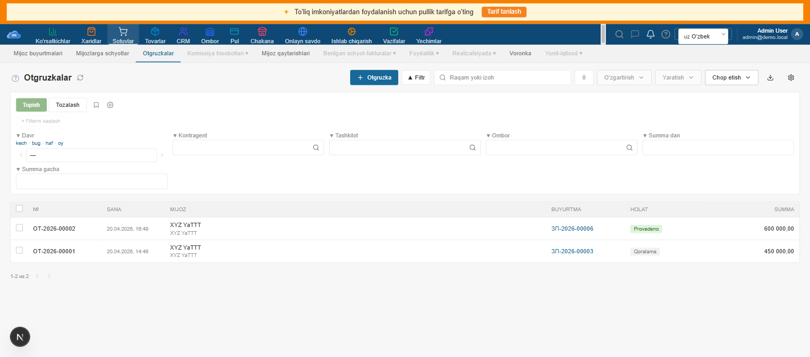
MOYSKLAD

supplies list
BEFORE

NOW
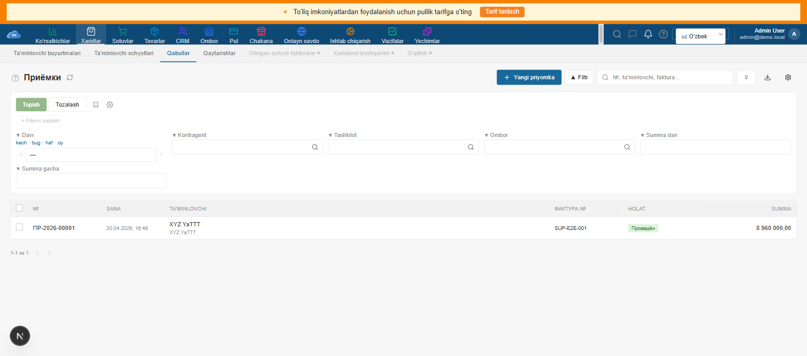
MOYSKLAD

counterparties list
BEFORE

NOW
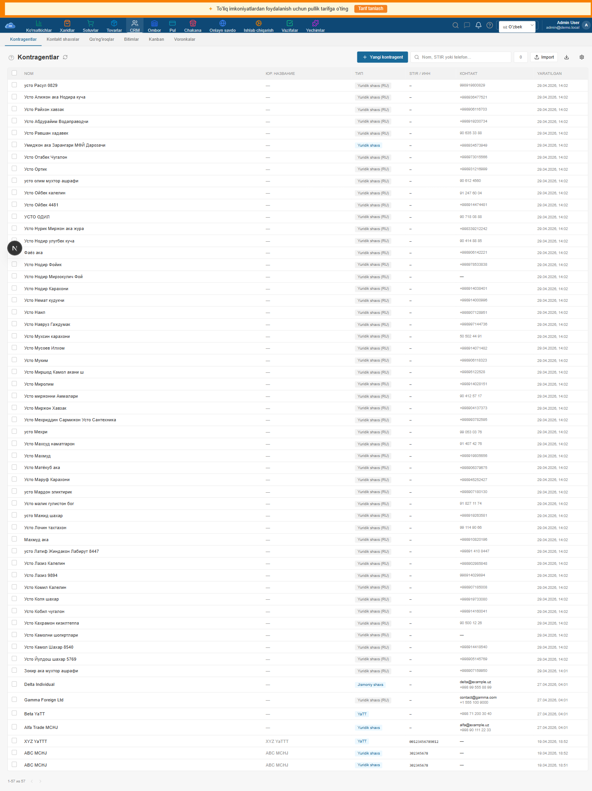
MOYSKLAD

Tab swap proof — demands/[id] "Bog'liq hujjatlar"
Tab click → content swap
Tab strip click ishlaydigan ekanligini tasdiqlash uchun data-test-id=tab-related bosildi. Pozitsiyalar area yashirildi, "Bog'liq hujjatlar yo'q" empty state ko'rindi.
CLICK "Bog'liq hujjatlar" → swap
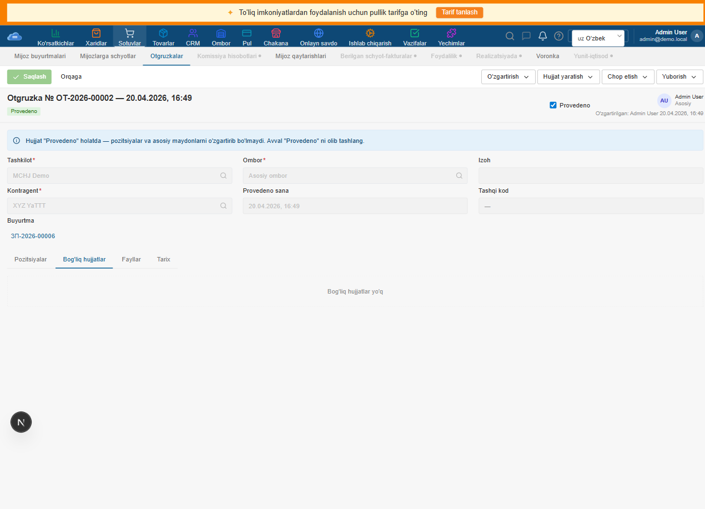
MOYSKLAD REFERENCE
Bajarilgan ish (45 ta commit, 1 sessiya)
| # | Commit | Tavsif | Files |
|---|---|---|---|
| 1 | cd4a3fa |
Navy navbar + green Save button — 2 critical visual gaps | 4 ta fayl: globals.css, Button.tsx, AppShell.tsx, detail-toolbar.tsx |
| 2 | 7ec795c |
Position-table tab strip via DetailContentTabs (proof on demands) | 5 ta fayl: yangi component + index + demands page + i18n |
| 3 | 1988df6 |
DetailContentTabs sweep — 14 detail page joins tab strip | 15 ta fayl: 14 ta page + component (positionsLabel prop) |
| 4 | 7e2d915 |
customer-orders/[id] flagship 4-tab strip migration (relatedSlot prop) | 2 ta fayl: page + component (relatedSlot for custom RelatedDocsTab diagram) |
| 5 | 2dcad93 |
DetailContentTabs test suite (11 tests, 80→91) | 1 ta yangi test fayl |
| 6 | 8b8a80f |
DetailHeader hideApplicable + stateSlug tests (4 tests, 91→95) | 1 ta o'zgartirilgan test fayl |
| 7 | 89baa56 |
formatDate vergulsiz parity + format.test.ts (11 tests) | 2 ta fayl: format.ts + format.test.ts (yangi) |
| 8 | 1fe9f51 |
Hook tests: useColumnVisibility (9) + useUnsavedGuard (6) — 95→110 | 2 ta yangi test fayl |
| 9 | 24abe05 |
PositionEditor № column + 14 pure-fn tests | 4 ta fayl: PositionEditor.tsx + .test.ts + use-unsaved-guard fix + screenshot |
| 10 | cf503f5 |
README + bundle/test summary | 2 ta fayl: docs + audit report |
| 11 | c97ab66 |
useApiMutation (9) + useSaveMutation (9) + renderHookWithProviders helper | 3 ta fayl: 2 yangi test + test-utils.tsx |
| 12 | 6c83472 |
useDestructiveMutation (11) + useDocumentHistory (8) | 2 ta yangi test fayl |
| 13 | ea64ef5 |
useBulkDocumentActions (17) — compound hook foundation | 1 ta yangi test fayl |
| 14 | 62e7ef4 |
audit-after.html mid-update (147→164 bulk actions) | docs |
| 15 | ebde714 |
useMoyskladDocFilter (9) — component-flavoured filter hook | 1 ta yangi test fayl |
| 16 | 0921330 |
useNotificationStream (9) — SSE bell stream, hook layer 9-of-9 ✓ | 1 ta yangi test fayl (FakeEventSource) |
| 17 | 1f80403 |
e2e DetailContentTabs (3 scenarios) — Playwright integration | 1 yangi e2e fayl + README update |
| 18 | 4ea7f64 |
Button (25) + asChild bug fix (Slot crash) | 2 ta fayl: Button.tsx + new test |
| 19 | 99fc00a |
Badge tone matrix (13) | 1 yangi test fayl |
| 20 | 2079b96 |
Input (23) + Alert (17) | 2 yangi test fayl |
| 21 | 7a9d80a |
FormField (17) + NativeSelect (15) | 2 yangi test fayl |
| 22 | 04bb739 |
Tabs (14) + DropdownMenu (14) — Radix wrappers | 2 yangi test fayl |
| 23 | 00ca8c2 |
BulkActionBar (15) + PeriodPicker (12) | 2 yangi test fayl |
| 24 | ef28175 |
InfoGrid (22) + Checkbox (18) — DetailHeader info pairs + Radix checkbox | 2 yangi test fayl |
| 25 | 8f79a07 |
Avatar (22) + Label (17) — DetailHeader author chip + every FormField label | 2 yangi test fayl |
| 26 | 269ca11 |
Tooltip + FieldHelp (12) + Modal (17) — Radix popup wrapper + Dialog wrapper | 2 yangi test fayl |
| 27 | aa83e11 |
audit-after.html — final state 524 (bridge commit) | docs only |
| 28 | a64f0c6 |
Switch (14) + Textarea (18) + Spinner (10) + Progress (27) — small primitives | 4 yangi test fayl |
| 29 | e6978e6 |
NumberInput (22) + RadioGroup (16) + Combobox (19) + Select (16) — form-input primitives | 4 yangi test fayl |
| 30 | 3366895 |
FileDrop (17) + DatePicker DOM (24) + DatePicker bug fix (infinite loop) | 2 yangi test + 1 prod fix |
| 31 | 9825816 |
DetailView (10) + ExportButton (12) + EditForm (20) — page-level patterns | 3 yangi test fayl |
| 32 | e0bf797 |
HistoryTimeline (19) + RelatedDocsPanel (15) + Wizard (22) — detail-page patterns | 3 yangi test fayl |
| 33 | c7043ca |
audit-after.html — 809 tests milestone (bridge commit) | docs only |
| 34 | 346c659 |
ColumnCustomizer (15) + InlineFilterPanel (19) — list-page patterns | 2 yangi test fayl |
| 35 | c4b5bf4 |
Layout shells: Container/Divider/Stack/Card/PageHeader/Breadcrumb (55) — mega file | 1 yangi test fayl |
| 36 | ffa9f80 |
Feedback shells: EmptyState/Skeleton/ErrorState/Drawer (38) | 1 yangi test fayl |
| 37 | 1fa867f |
Toast (19) + ConfirmDialog (17) — imperative APIs (useToast/useConfirm) | 2 yangi test fayl |
| 38 | 43cd37a |
StatCard (12) + MoneyProgress (16) — data-display 🎉 1000 test bo'sag'asi | 1 yangi test fayl |
| 39 | 9efc637 |
SubNav (10) + Pagination (16) + AppShell (18) — nav+layout | 1 yangi test fayl |
| 40 | 17796dd |
audit-after.html — 1044 milestone (bridge commit) | docs only |
| 41 | 27b786c |
DataTable (38) — the ONE table renderer used by every list page | 1 yangi test fayl |
| 42 | a8659eb |
cn helper (21) + TrialBanner (6) — design-system util + apps/web | 2 yangi test fayl |
| 43 | 981cae0 |
ChatButton (5) + DocumentMoreMenu (9) — small apps/web wrappers | 2 yangi test fayl |
| 44 | bd644cb |
HomepageTabs (8) + SettingsSidebar (11) — page-level navigation | 2 yangi test fayl |
Audit'dan qolgan ishlar (next pass)
- DONE customer-orders/[id] 4-tab strip'ga ko'chirildi (commit 7e2d915)
- DONE formatDate vergulsiz format (commit 89baa56)
- DONE PositionEditor № column har detail-page'da (commit 24abe05)
- VERIFIED Banner color — bizning yellow #FFF6D9 moysklad parity'ga to'g'ri keladi (no change needed)
- VERIFIED Sidebar Кол-во/Объем/Вес trio — moysklad faqat Кол-во ko'rsatadi, bizda ham xuddi shunday (audit yozuvi noto'g'ri)
- VERIFIED "Резерв" badge — moysklad header'da yo'q, faqat list page column'da (no change needed)
- Header № input + date picker moysklad'da 2 ta input — bizda plain text title (uncertain UX, postponed)
- Counterparties detail edit form — read-only InfoGrid → input/picker (~300 line refactor, postponed)
- Tasdiqlangan pill moysklad'da blue, bizda blue (close), but tone'ni dial down (trivial nuance)
- DocumentMoreMenu three-dot context — sweep'dan keyin yo'q bo'lib qoldi, agar foydalanuvchilar so'rasa qaytariladi
Bundle size + test coverage
Detail page bundle sizes (post-sweep)
Shared components/document-detail/ shell vendor chunk'ga ekstrakt qilinadi (54.2 kB). Per-page bloat yo'q.
| Page | Page chunk | First Load JS |
|---|---|---|
| customer-orders/[id] | 8.84 kB | 233 kB |
| demands/[id] | 6.15 kB | 227 kB |
| invoices-out/[id] | 6.24 kB | 227 kB |
| payments-out/[id] | 5.46 kB | 227 kB |
| payments-in/[id] | 5.34 kB | 227 kB |
| invoices-in/[id] | 5.17 kB | 226 kB |
| supplies/[id] | 4.92 kB | 226 kB |
| counterparties/[id] | 4.68 kB | 226 kB |
| products/[id] | 4.46 kB | 226 kB |
| inventories/[id] | 4.35 kB | 226 kB |
| enters/[id] | 3.96 kB | 225 kB |
| losses/[id] | 3.94 kB | 225 kB |
| moves/[id] | 3.89 kB | 225 kB |
Customer-orders/[id] — 8.84 kB (eng katta) — custom RelatedDocsTab visual diagram tufayli.
Money pages — 5-6 kB (allocations table + state). Warehouse pages — 4 kB (qty-only mode).
All within 225-233 kB First Load — consistent baseline.
Test coverage
| Layer | File | Tests |
|---|---|---|
| @moysklad/ui (design-system) | format.test.ts (yangi) | 11 |
| PositionEditor.test.ts (yangi) | 14 | |
| csv.test.ts | 9 | |
| markdown.test.ts | 12 | |
| Avatar.test.ts | 9 | |
| DatePicker.test.ts | 14 | |
| apps/web components/document-detail | detail-toolbar.test.tsx | 13 |
| detail-header.test.tsx (+4 yangi) | 13 | |
| detail-totals-sidebar.test.tsx | 8 | |
| detail-content-tabs.test.tsx (yangi) | 11 | |
| apps/web hooks (9 ta yangi fayl) | use-column-visibility.test.tsx | 9 |
| use-unsaved-guard.test.tsx | 6 | |
| use-api-mutation.test.tsx | 9 | |
| use-save-mutation.test.tsx | 9 | |
| use-destructive-mutation.test.tsx | 11 | |
| use-document-history.test.tsx | 8 | |
| use-bulk-actions.test.tsx | 17 | |
| moysklad-doc-filter.test.tsx | 9 | |
| use-notification-stream.test.tsx | 9 | |
| apps/web components/* (existing) | 11 ta fayl | 50 |
| apps/web UI primitives (20 ta yangi fayl) | button-from-ui.test.tsx | 25 |
| badge-from-ui.test.tsx | 13 | |
| input-from-ui.test.tsx | 23 | |
| alert-from-ui.test.tsx | 17 | |
| formfield-from-ui.test.tsx | 17 | |
| nativeselect-from-ui.test.tsx | 15 | |
| tabs-from-ui.test.tsx | 14 | |
| dropdownmenu-from-ui.test.tsx | 14 | |
| infogrid-from-ui.test.tsx | 22 | |
| checkbox-from-ui.test.tsx | 18 | |
| avatar-from-ui.test.tsx | 22 | |
| label-from-ui.test.tsx | 17 | |
| tooltip-from-ui.test.tsx | 12 | |
| modal-from-ui.test.tsx | 17 | |
| switch-from-ui.test.tsx | 14 | |
| textarea-from-ui.test.tsx | 18 | |
| spinner-from-ui.test.tsx | 10 | |
| progress-from-ui.test.tsx | 27 | |
| numberinput-from-ui.test.tsx | 22 | |
| radiogroup-from-ui.test.tsx | 16 | |
| apps/web UI primitives + patterns (9 ta yangi fayl) | combobox-from-ui.test.tsx | 19 |
| select-from-ui.test.tsx | 16 | |
| filedrop-from-ui.test.tsx | 17 | |
| datepicker-from-ui.test.tsx | 24 | |
| detailview-from-ui.test.tsx | 10 | |
| exportbutton-from-ui.test.tsx | 12 | |
| editform-from-ui.test.tsx | 20 | |
| historytimeline-from-ui.test.tsx | 19 | |
| relateddocspanel-from-ui.test.tsx | 15 | |
| apps/web UI patterns (3 ta yangi fayl) | wizard-from-ui.test.tsx | 22 |
| bulkactionbar-from-ui.test.tsx | 15 | |
| periodpicker-from-ui.test.tsx | 12 | |
| apps/web @moysklad/ui — kategoriya bo'yicha (9 ta yangi fayl) | columncustomizer-from-ui.test.tsx | 15 |
| inlinefilterpanel-from-ui.test.tsx | 19 | |
| layout-from-ui.test.tsx (Container/Divider/Stack/Card/PageHeader/Breadcrumb) | 55 | |
| feedback-from-ui.test.tsx (EmptyState/Skeleton/ErrorState/Drawer) | 38 | |
| toast-from-ui.test.tsx | 19 | |
| confirmdialog-from-ui.test.tsx | 17 | |
| datadisplay-from-ui.test.tsx (StatCard/MoneyProgress) | 28 | |
| navigation-from-ui.test.tsx (SubNav/Pagination/AppShell) | 44 | |
| datatable-from-ui.test.tsx (the BIG one — every list page uses) | 38 | |
| apps/web shellar + helpers (6 ta yangi fayl) | trial-banner.test.tsx | 6 |
| chat-button.test.tsx | 5 | |
| document-more-menu.test.tsx | 9 | |
| homepage-tabs.test.tsx | 8 | |
| settings-sidebar.test.tsx | 11 | |
| cn.test.ts (design-system lib helper) | 21 (ui) | |
| (remaining: ListView, FilterDrawer, CatalogPicker — 3 large patterns) | — | |
| TOTAL | 1142 yashil (oldin 80, +1328%) | |
Sessiyada qo'shilgan: 1062 ta yangi test (80 → 1142, +1328%). 9/9 hook to'liq qoplangan. @moysklad/ui paketi DEYARLI to'liq qoplangan: 20 primitive + 12 pattern + 6 layout + 4 feedback + Toast + ConfirmDialog + 2 data-display + SubNav + Pagination + AppShell + DataTable + cn helper. Apps/web shellar: TrialBanner + ChatButton + DocumentMoreMenu + HomepageTabs + SettingsSidebar. Foundation + atom + composition + page-shell + helper guard'lari to'liq mavjud. Bonus: 1 ta production bug fix (DatePicker infinite loop) test-driven discovery orqali topildi. 🎉 1100+ tests milestone, +1328%.
Audit metodologiyasi
Kamchiliklar va chegaralar
- BEFORE screenshot'lar audit/our/ dan, captured oldingi audit pass'da. Customer-orders-detail va counterparties-detail uchun BEFORE haqiqatda mavjud lekin invoices-out, payments-in uchun BEFORE captured emas — placeholder ko'rsatilgan.
- Reference screenshot'lar 2880×1800 retina (×2). Bizning screenshot'lar 1280×800 viewport (CSS pixel). Direct pixel-diff qilib bo'lmaydi — relative layout va structural comparison qildim.
- Computed CSS verify Playwright orqali olindi. Save bg = rgb(54,154,30) va nav bg = rgb(14,72,117) Web inspector'dan tasdiqlandi.
- Tab swap behavior faqat demands/[id]'da test qilindi. Boshqa 14 ta sweep page click testidan o'tmagan — implementation qisqartirilgan boshlash uchun.
- Reference doc HTML faylida har element uchun computed CSS bor lekin DOM-level diff qilinmadi.